Super Mario: At Home
Robotics Final Project
Robot Overview
Due to covid-19, Tufts Universiy sent all its students home right before the start of the robotics final project. The new challenge for the robotics final was to move a ball across the screen as part of a class-wide virtual Rube-Goldberg machine. Armed with an EV3 mindstorm kit, my laptop and whatever else could be found around the house, I got to work. Needing a hero to defeat coronavirus and banish any quarantine boredom, I created Super Mario: At Home, the only unauthorized, interactive Super Mario game that lets players play both in cyberspace and real life.
The features of this game include:
- Hardware: A conveyer belt that moves a LEGO Mario and is mounted on an EV3 with wheels
- Communication: EV3 and laptop talk via serial
- Communication: A server built with p5.serialport gets serial data from computer USB to the browser
- Virtual Game: A mini-game synced with the physical EV3 robot has the player avoid virtual objects like the coronavirus to reach an end flag
- Machine Learning: Mario's movements in the virtual and physical world are controlled via hand movements interpreted by a neural net created using Teachable Machines
Robot Build
The physical portion of the mario robot consists of a the EV3 on wheels driven by two large motors. A conveyer belt mounted atop the EV3 and driven by a medium motor holds a model of Mario built in Lego. When virtual Mario jumps in the game, the conveyer belt also moves the LEGO Mario up and down in the physical world.
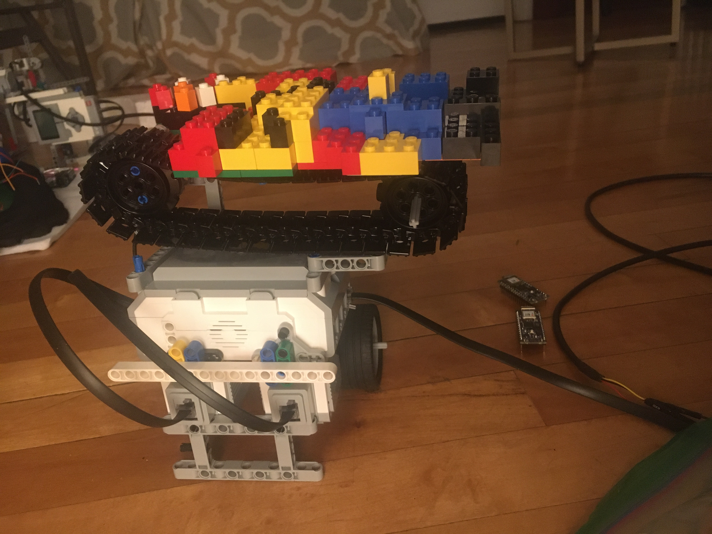Initially, Mario was painted on a piece of paper but was then rebuilt to stay true to the LEGO theme. Rather than holding a 3D ball to carry across the screen, the LEGO Mario holds a LEGO replica of the coronavirus to represent the ball and the current times.
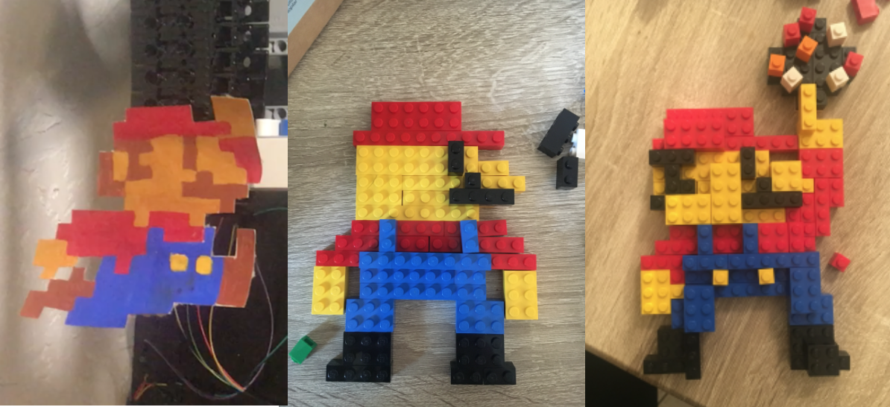Communication
To talk to the other robots making up the virtual Rube Goldberg machine, my Super Mario robot checks a SystemLink tag in the cloud to begin its journey across the screen. When the Super Mario robot wins the game, it resets it's own start tag to false and sets the next robot's tag to true.
Serial communction was used to send data back and forth between the laptop and the EV3. To get data from the USB port of the laptop to the browser, I used the p5.serialport library to create a node.js based WebSocket server that served the serial data to the browser. The data sent over serial indicated four states in the game: begin, jump, game over and game won.
Serial Communication Problems
Initally, I had the EV3 talk over serial to an Arduino which would in turn talk over serial to the computer. While this setup worked in pieces, I had lots of trouble getting the communication between these 3 devices to work smoothly and often receieved lots of garbage data over the connection. In the final project, I cut out the Arduino middleman and ordered a cable that let the EV3 send serial data directly to the computer's USB port.
Virtual Game
To get the full Super Mario experience, I built a short game in the browser using p5.js and the p5.play library. The movement of Mario is controlled using hand commands shown to the laptop's camera. Once started with the 'start' hand command, the game has Mario move automatically to the right at a set velocity. Whatever happens in the virtual game is also replicated on the physical Mario. The height and speed of the coronavirus is randomly generated everytime to add difficulty to the game. The game is won when Mario reaches the flag at the end.
In the original game, Mario's movements were controlled using hand movements. But, since the machine learning algorithm is highly dependent on the environment seen by the computer camera, chances are low that it would work with another user's setup and movements.
Below, is a version of the game that can be played with either the w key or up arrow. Full screen is necessary to view the full game.
Machine Learning: Hand Control
I trained a neural net with images of my hands in different positions using Google's Teachable Machines. The neural net was trained to recognize three different poses using about 50 images per pose: an open hand for start, a finger pointing upward for jump and a blank wall to recognize no command. The model was hosted by Teachable Machines and could be accessed in the browser using p5.js
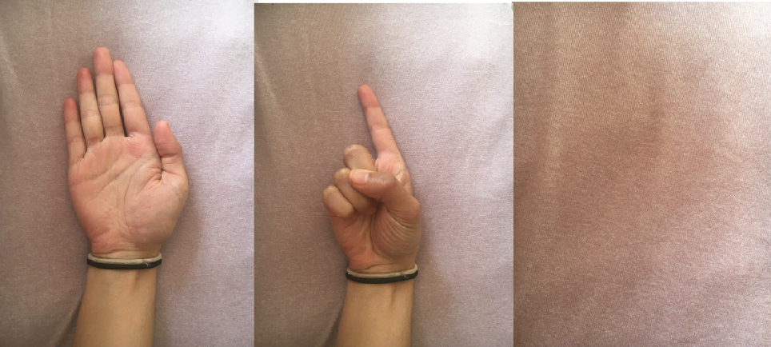Future Improvements
To make the robot even cooler, some of these improvements can be made:
- Allowing the user to upload their own teachable machine model to the website so that they can control Mario with their hands
- Adding more levels and obstacles for Mario to avoid so that winning one levels allows the user ot advance to a brand new level.
- Using bluetooth or an another type of wireless communication to allow the robot to recieve data without being physically connected to the computer
Code
EV3 Code
This code controls the physical ev3 robot. It connects to SystemLink to determine when the robot should begin moving, recieves serial data from the browser and moves the motors on the robot accordingly.
#!/usr/bin/env pybricks-micropython
from pybricks import ev3brick as brick
from pybricks.ev3devices import (Motor, TouchSensor, ColorSensor,
InfraredSensor, UltrasonicSensor, GyroSensor)
from pybricks.parameters import (Port, Stop, Direction, Button, Color,
SoundFile, ImageFile, Align)
from pybricks.tools import print, wait, StopWatch
from pybricks.robotics import DriveBase
#For Serial communication:
from pybricks.parameters import Color, Port
from pybricks.iodevices import AnalogSensor, UARTDevice, I2CDevice
from serial import Serial
import ubinascii, ujson, urequests, utime
import time
brick.sound.beep()
motor = Motor(Port.A, Direction.CLOCKWISE)
left = Motor(Port.D, Direction.CLOCKWISE)
right = Motor(Port.C, Direction.CLOCKWISE)
robot = DriveBase(left, right, 56, 76.2)
uart = UARTDevice(Port.S1, 9600, timeout=2000)
print(motor.angle())
pw = []
with open('env_file.txt', 'r') as f:
for line in f:
key, value = line.strip().split('=', 1)
string1 = '{"name":"' +key+ '","value":"'+value+'"}'
pw.append(string1)
pw = ujson.loads(pw[0])
def SL_setup():
urlBase = "https://api.systemlinkcloud.com/nitag/v2/tags/"
headers = {"Accept":"application/json","x-ni-api-key":Key}
return urlBase, headers
def Put_SL(Tag, Type, Value):
urlBase, headers = SL_setup()
urlValue = urlBase + Tag + "/values/current"
propValue = {"value":{"type":Type,"value":Value}}
try:
reply = urequests.put(urlValue,headers=headers,json=propValue).text
except Exception as e:
print(e)
reply = 'failed'
return reply
def Get_SL(Tag):
urlBase, headers = SL_setup()
urlValue = urlBase + Tag + "/values/current"
try:
value = urequests.get(urlValue,headers=headers).text
data = ujson.loads(value)
#print(data)
result = data.get("value").get("value")
except Exception as e:
print(e)
result = 'failed'
return result
def Create_SL(Tag, Type):
urlBase, headers = SL_setup()
urlTag = urlBase + Tag
propName={"type":Type,"path":Tag}
try:
urequests.put(urlTag,headers=headers,json=propName).text
except Exception as e:
print(e)
def read_serial():
try:
if (uart.waiting()) !=0:
print('hiii')
msg = uart.read(uart.waiting()).decode('utf-8')
print(msg)
return msg
except Exception as e:
print(e)
#continue
def write_serial(msg):
uart.write(str(msg).encode())
def driveback():
robot.drive(-60,0)
wait(5000)
robot.drive(0,0)
count = 0
end = True
print('start')
while True:
run = Get_SL('Start04')
wait(1000)
print(run)
while run == 'true':
rec = read_serial()
if (rec == 'n'):
end = False
print(rec)
elif (rec == 'd'):
end = True
driveback()
elif (rec == 'w' or rec == 'wd') :
end = True
driveback()
Put_SL('Start04', 'BOOLEAN', 'false')
Put_SL('Start05', 'BOOLEAN', 'true')
if (end == False ):
robot.drive(10,1)
if (rec == 'j'):
print(rec)
motor.run_angle(-80,200,Stop.COAST, True)
motor.run_angle(80,200,Stop.COAST, True)
Mario Game Code
The Mario game is displayed on the browser using two files: an .html file for formatting and a .js file for all interactivity. The javascript file, displayed below, gets and sends data over serial, connects with the teachable machine model and creates all the graphics and interactivity within the Super Mario: At Home game.
//universal variables
var GRAVITY = 0.3;
var DRAG = -1;
var GROUND_Y = 450;
var mario, ground, cliff, virus;
var gameOver;
var win = false;
var inframe = false;
var added = 1;
var serial;
var portName = '/dev/tty.usbserial-AB0JN9HX';
var inData;
var reset = true;
// Classifier Variable
let classifier;
// Model URL
let imageModelURL = ' https://teachablemachine.withgoogle.com/models/TKpaxdt6b/';
// Video
let video;
let flippedVideo;
// To store the classification
let label = "";
// Load the model first
function preload() {
classifier = ml5.imageClassifier(imageModelURL + 'model.json');
}
function setup() {
createCanvas(1000,400);
background('rgba(94, 177, 247,1)');
video = createCapture(VIDEO);
video.size(320, 240);
video.hide();
flippedVideo = ml5.flipImage(video);
// Start classifying
classifyVideo();
//Serial Stuff
serial = new p5.SerialPort(); //new instance of serial port lib
serial.on('list', printList);
serial.list();
serial.on('connected', serverConnected);
serial.on('open', portOpen);
serial.on('data', serialEvent);
serial.on('error', serialError);
serial.on('close', portClose);
serial.open(portName); //open a serial port
//Game Stuff
marioImg = loadImage('https://i.postimg.cc/V6d5f7jV/mario.png');
mario = createSprite(60, 3*height/4, 10,10);
mario.addImage(marioImg);
mario.scale = 0.5;
mario.setDefaultCollider();
cliff = createSprite(320, 3*height/4);
//cliffImg = loadImage('https://i.postimg.cc/Gm4XwRN0/square.png');
cliffImg = loadImage('https://i.postimg.cc/nVY7dLHR/pipe.png');
cliff.addImage(cliffImg);
cliff.scale = (.5);
cliff.setCollider('rectangle',0,0,200,200);
ground = createSprite(500, 480, 100,20);
groundImg = loadImage('https://i.postimg.cc/QC1C2F34/811d7245e16a624e06a9be7b1e4bd18c.png');
ground.addImage(groundImg);
ground.scale = (2.4);
sky = createSprite(370,10,10,10);
skyImg = loadImage('https://i.postimg.cc/rm6vhj8r/a91aecff-e4dd-4d30-b2f6-d53f5ca22e79-570.jpg');
sky.addImage(skyImg);
sky.scale = (1.5);
coronaImg = loadImage('https://i.postimg.cc/Cx26z5DL/corona.png');
virus = createSprite(1050, 310, 20, 20);
virus.setCollider('circle',0,0,20,20);
virus.addImage(coronaImg);
virus.scale = 0.07;
flagImg = loadImage('https://i.postimg.cc/T1fn9WHL/flag.png');
flag = createSprite(850, 200, 20, 20)
flag.setCollider('rectangle',0,0,100,100);
flag.addImage(flagImg);
flag.scale = 0.4;
youwinImg = loadImage('https://i.postimg.cc/D0Z9p5ZR/youwin.jpg');
youwin = createSprite(500,200,20,20);
youwin.addImage(youwinImg);
youwin.scale = 1;
gameOver = true;
updateSprites(true);
//updateSprites(false);
}
function draw() {
console.log(label);
if (gameOver && label == "Start2"){
newGame();
}
else if(!gameOver){
if(label == 'Jump' && reset == true){
jump(mario);
reset = false;
setTimeout(function(){reset = true;}, 3000);
}
mario.velocity.y += GRAVITY;
mario.velocity.x = 1.3;
if(frameCount%150 == 0 && mario.position.x > 300 && mario.position.x <760 && inframe == false) {
//console.log('inframe');
//var virus = random(2,4);
inframe = true;
}
if (virus.position.x < 320 ){
let newpos = random(280,330);
virus.position.x = 1050;
virus.position.y = newpos;
inframe = false;
}
if(inframe == true && mario.position.x < 650){
virus.velocity.x = -2;
}
else {
// virus.position.x = 320;
// virus.velocity.x = 0;
}
if(mario.position.y<0)
mario.position.y = 0;
else if(mario.position.y>300)
mario.position.y = 300;
if (mario.overlap(virus)){
console.log('overlap');
die();
}
if (mario.position.x > 850){
winner();
die();
}
}
else {
mario.position.x = 60;
mario.position.y = 3*height/4;
mario.velocity.x = 0;
}
clear();
background('rgba(94, 177, 247,1)');
let c = (mario.collide(cliff));
drawSprite(sky);
drawSprite(virus);
drawSprite(mario);
drawSprite(cliff);
drawSprite(flag);
drawSprite(ground);
if (win == true){
drawSprite(youwin);
}
}
function jump(player){
serial.write('j');
player.velocity.y = -10;
player.velocity.x = 20;
}
function moveforward(player){
player.velocity.x = 8;
}
function movebackward(player){
player.velocity.x = -8;
}
function newGame() {
serial.write('n');
gameOver = false;
mario.position.x = 60;
mario.position.y = 3*height/4;
}
function die() {
serial.write('d');
gameOver = true;
}
function winner() {
serial.write('w');
win = true;
setTimeout(() => { win = false; }, 2000);
}
//Video Functions
function classifyVideo() {
flippedVideo = ml5.flipImage(video)
classifier.classify(flippedVideo, gotResult);
flippedVideo.remove();
}
// When we get a result
function gotResult(error, results) {
// If there is an error
if (error) {
console.error(error);
return;
}
// The results are in an array ordered by confidence.
// console.log(results[0]);
label = results[0].label;
// Classifiy again!
classifyVideo();
}
//Serial Functions
function printList(portList){
console.log(portList);
console.log(portList.find(correctPort));
}
function correctPort(val){
if (val.includes('usbserial')){
return(val);
}
}
function serverConnected() {
console.log('connected to server.')
}
function portOpen() {
console.log('serialport opened');
}
function serialEvent() {
console.log('serial: ');
inData = Number(serial.read());
//inData = serial.readStringUntil('\r\n');
console.log(String.fromCharCode(int(inData)));
}
function serialError(err) {
console.log('Error: '+ err);
}
function portClose() {
console.log('serial port closed');
}
function keyPressed(){
serial.write('9');
}Shape Sorter
Robotics Project Eight
Features
The Shape Sorter is able to :
- Uses a neural network from teachable machines trained on ≈1000 pictures to identify 5 similarly shaped lego pieces with an over 95% success rate
- Had the ev3 communicate with the computer using System Link
- A robotic arm place the lego piece in front of the computer camera at the ideal position for the neural net algorithm and then moves to place it into a bin
- Once the neural net categorizes the lego piece, the ev3 will put the lego piece into the appropriate bin
Shapes to be Sorted
Video
Projectile Motion
robotics midterm
Features
The Dunk-a-nator 3000 is able to :
- Launch a small ball into a cup a set distance away at the push of a button with no further user interaction
- Receive and send data to a phone app over wi-fi. The app allows the user to:
- control the direction the trebuchet is aiming
- indicate the time at which to launch the ball
- display on the map the intended speed and distance of the launch
- Use a four different models to calculate the ideal launch velocity:
- Model A-1: Uses pure kinematics to determine the launch velocity of the ball
- Model A-2: Improves on the previous model by adjusting launch velocity to account for non-linear increase in motor power
- Model B-1: Uses the supervised learning algorithm K Nearest Neighbors to determine launch velocity
- Model B-2: Iterates on the previous model by combining linear interpolation with KNN
Video of Most Successful Model
This model uses KNN and Linear Interpolation to calculate intial velocity
Models
Projectile Motion Visualization
While four models were created for this robot, the models can easily be split into two categories: Physics-based and k-Nearest Neighbors. Based on the shortfalls of each of these models, another models was created improving on original.
The interactive visualization below shows how my robot calculates the throw velocity and trajectory based on the positioning of the cup. In the visualization, the robot will aim for the rectangle (representing the cup). Playing around with the visualization, the short-comings of each model quickly becomes apparent.
Visualization does not work on mobile. Interested in the code behind the visualization? Check it out here
Four Throwing Models
The physics model works for short distances but once the cup is moved past 60cm, accuracy drops. For KNN, the data was split into 5 groups and thus the initial velocity will be the same for a range of values as it doesn't adjust to small changes in position. To learn more about the different models (and see the code behind them!), explore the sections below.
Kinematics Only
The Kinematics model is good at short distances but not longer ones
This approach modeled the ball's trajectory by treating it like pure projectile motion. The angle, acceleration (aka gravity), x distance and y distance are all known while the initial and final velocities are not. From the known values and equations of motion we get:
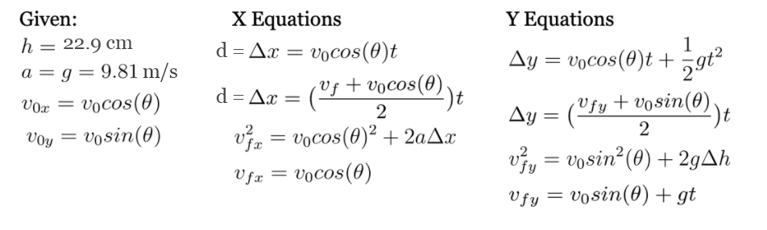Solving for v0, we find that:
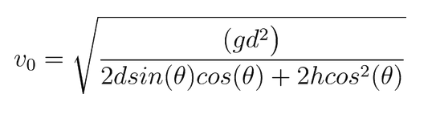So once the ultrasonic sensor determines the distance of the cup, the robot should be able to perfectly get the ball into the cup everytime as long as there are no other factors interfering.
To calculate the motor speed, the ev3 determines the distance of the cup using the ultrasonic sensor. The value from the sensor is converted to meters by dividing by a thousand. However, the ultrasonic sensor is ~4.5 cm (1.75 in) in front of where the ball is released so an offset is added to the recorded ultrasonic sensor distance. In the code the function calcv0(distance, theta, height) uses the given variables and plugs it into the equation solved earlier. The number returned usually ranges from 70-100 and is the dc power the motor should run at.
Sadly, with friction, the time the motors take to warm up and varying levels of power being delivered to the motors there are many external factors that cause the robot's real motion not to match the physics model. As you can see from the video and the visualization, this model worked at short distances but not farther off ones.
Success Rate
This model was 60% successful. The success rate of the model was tested by having the robot throw the ball 10 times at five different positions (two throws per position). The ball made it into the cup for the two short distances both times and twice more at the farther distances for a total success rate of 6/10.
Code
#!/usr/bin/env pybricks-micropython
from pybricks import ev3brick as brick
from pybricks.ev3devices import (Motor, TouchSensor, ColorSensor,
InfraredSensor, UltrasonicSensor, GyroSensor)
from pybricks.parameters import (Port, Stop, Direction, Button, Color,
SoundFile, ImageFile, Align)
from pybricks.tools import print, wait, StopWatch
from pybricks.robotics import DriveBase
import ubinascii, ujson, urequests, utime
import time, math
import ubinascii, ujson, urequests, utime, random
pw = []
with open('env_file.txt', 'r') as f:
for line in f:
key, value = line.strip().split('=', 1)
string1 = '{"name":"' +key+ '","value":"'+value+'"}'
pw.append(string1)
pw = ujson.loads(pw[0])
def SL_setup():
urlBase = "https://api.systemlinkcloud.com/nitag/v2/tags/"
headers = {"Accept":"application/json","x-ni-api-key":Key}
return urlBase, headers
def Put_SL(Tag, Type, Value):
urlBase, headers = SL_setup()
urlValue = urlBase + Tag + "/values/current"
propValue = {"value":{"type":Type,"value":Value}}
try:
reply = urequests.put(urlValue,headers=headers,json=propValue).text
except Exception as e:
print(e)
reply = 'failed'
return reply
def Get_SL(Tag):
urlBase, headers = SL_setup()
urlValue = urlBase + Tag + "/values/current"
try:
value = urequests.get(urlValue,headers=headers).text
data = ujson.loads(value)
#print(data)
result = data.get("value").get("value")
except Exception as e:
print(e)
result = 'failed'
return result
def dsin(val):
return math.sin(math.radians(val))
def dcos(val):
return math.cos(math.radians(val))
def calcv0(d,theta,h):
v0 = pow(((g*d*d)/(2*d*dsin(theta)*dcos(theta)+2*h*dcos(theta)*dcos(theta))),0.5)
return v0
#Define Sensors
ultra= UltrasonicSensor(Port.S1)
throw = Motor(Port.A, Direction.COUNTERCLOCKWISE)
turn = Motor(Port.D, Direction.COUNTERCLOCKWISE)
angle = 137
d= float(ultra.distance())/1000
h = 9*2.54/100
g= 9.81
theta = 47.5
while True:
go = Get_SL('Throw')
spin = Get_SL('Spin')
# speed = KNN(categories,distance,ultra.distance() ,3) -1
speed =(calcv0(float(ultra.distance())/1000 + 1.75*2.54/100,theta,h)) -2
print(ultra.distance(), ' ',speed)
if go == 'true' :
Put_SL('distance', 'STRING',str(float(ultra.distance())/10) + ' cm')
Put_SL('speed', 'STRING',str(speed)[:4]+ '%')
Put_SL('Throw', 'BOOLEAN','false')
wait(500)
for i in range(1000):
if abs(throw.angle())< abs(115):
throw.dc(speed)
else:
break
wait(0.1)
print('done')
throw.run_angle(2,2,stop_type=Stop.COAST, wait=True)
if spin != 0:
print(spin)
turn.run_angle(50,int(spin),stop_type=Stop.COAST, wait=True)
Put_SL('Spin', 'INT','0')
wait(500)
Kinematics + Trendline Fit
A big issue with the pure Kinematics model was that it did not account for the fact the motors did not operate at peak speed for the entire throw. Instead, it took some time for the motor to reach full speed. To mitigate the effects of this, this model recorded the speed the motor was supposed to run out and the actual distance the ball reached when thrown. These values were graphed in excel.
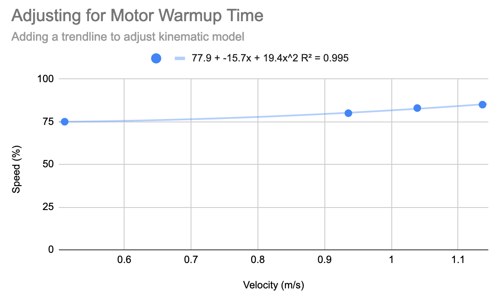Code
Using the equation from the graph's trendline, the following function was added to the physics model
def dcconvert(x):
return 77.9 - 15.7*x+19.4*x**2
#in the while loop, this line was then adjusted
speed =dcconvert(calcv0(float(ultra.distance())/1000 + 1.75*2.54/100,theta,h))
Success Rate
This model was 70% successful. The success rate of the model was tested by having the robot throw the ball ten times at five different positions (two throws per position). The ball made it into the cup for the three shortest distances both times and once more at the farther distances for a total success rate of 7/10.
K Nearest Neighbors
For the machine learning model, I decided to go the supervised learning route with K Nearest Neighbors because the data was relatively fast to collect and (I thought) did not change that much from run to run. Later, I found out that the battery of the brick greatly affected the speed of the motor so perhaps an unsupervised learning model that took battery levels into account as well might have been better at generalizing the throwing velocity to a larger range of situatios.
When setting up the K Nearest Neighbors algorithm I quickly realized that if each value (or neighbors) was a set distance, I would need a lot of training data for each distance I wanted the robot to throw the ball to. Since this could take a while, I ended up only taking data at five motor speeds to determine the distance traveled. The data is shown in the table below. The algorithm compared the value from the ultrasonic sensor to it's three closest neighbors to decide the speed of the launch velocity.
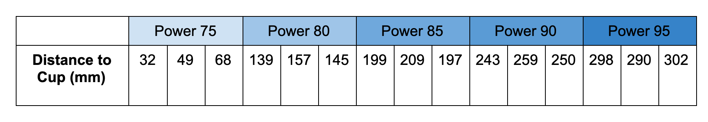Recorded Training Data to Train KNN Model. Table displays the distance the cup is placed at to catch the ball at five dc motor speeds ranging from 75 to 95.
Predictably, this model did not work very well as it would throw the same speed for any value within an approximately 8 cm distance range. One advantage of the k nearest neighbor model over the physics model is that by taking in training data, the non-linear relationship between the motor speed to throw distance did not throw the model off. Check out the interactive visualization above to see this in action.
Success Rate
When the cup was placed in a location there was training data for, the robot put the ball in the cup 90% of the time.When the cup was placed anywhere else, the robot had a 0% success rate. The distance between the neighbors was too large to be effective for this application.
Code
#!/usr/bin/env pybricks-micropython
from pybricks import ev3brick as brick
from pybricks.ev3devices import (Motor, TouchSensor, ColorSensor,
InfraredSensor, UltrasonicSensor, GyroSensor)
from pybricks.parameters import (Port, Stop, Direction, Button, Color,
SoundFile, ImageFile, Align)
from pybricks.tools import print, wait, StopWatch
from pybricks.robotics import DriveBase
import ubinascii, ujson, urequests, utime
import time, math
import ubinascii, ujson, urequests, utime, random
pw = []
with open('env_file.txt', 'r') as f:
for line in f:
key, value = line.strip().split('=', 1)
string1 = '{"name":"' +key+ '","value":"'+value+'"}'
pw.append(string1)
Key = ujson.loads(pw[0])
def SL_setup():
urlBase = "https://api.systemlinkcloud.com/nitag/v2/tags/"
headers = {"Accept":"application/json","x-ni-api-key":Key}
return urlBase, headers
def Put_SL(Tag, Type, Value):
urlBase, headers = SL_setup()
urlValue = urlBase + Tag + "/values/current"
propValue = {"value":{"type":Type,"value":Value}}
try:
reply = urequests.put(urlValue,headers=headers,json=propValue).text
except Exception as e:
print(e)
reply = 'failed'
return reply
def Get_SL(Tag):
urlBase, headers = SL_setup()
urlValue = urlBase + Tag + "/values/current"
try:
value = urequests.get(urlValue,headers=headers).text
data = ujson.loads(value)
#print(data)
result = data.get("value").get("value")
except Exception as e:
print(e)
result = 'failed'
return result
def takeSecond(elem):
return elem[0]
def KNN(categories, distance, x, k):
dist = []
for (i, val) in enumerate(distance):
dist.append((abs(val-x),categories[i]))
dist.sort(key=takeSecond)
sum = 0
for i in range(3):
sum += dist[i][1]
return(sum/3)
#this is actual k means
# return 0 if sum < (k-sum) else 1 # return 0 if mostly 0s
def dsin(val):
return math.sin(math.radians(val))
def dcos(val):
return math.cos(math.radians(val))
#Define Sensors
ultra= UltrasonicSensor(Port.S1)
throw = Motor(Port.A, Direction.COUNTERCLOCKWISE)
turn = Motor(Port.D, Direction.COUNTERCLOCKWISE)
#Training Data
categories = [73,75, 80, 85,90,95, 100 ]
distance = [32,51,139,200, 247, 290, 310]
for i,val in enumerate(distance):
distance[i] = val
Constants
while True:
go = Get_SL('Throw')
spin = Get_SL('Spin')
speed = KNN(categories,distance,ultra.distance() ,3) -1
print(ultra.distance(), ' ',speed)
if go == 'true' :
Put_SL('distance', 'STRING',str(float(ultra.distance())/10) + ' cm')
Put_SL('speed', 'STRING',str(speed)[:4]+ '%')
Put_SL('Throw', 'BOOLEAN','false')
wait(500)
for i in range(1000):
if abs(throw.angle())< abs(115):
throw.dc(speed)
else:
break
wait(0.1)
print('done')
throw.run_angle(2,2,stop_type=Stop.COAST, wait=True)
if spin != 0:
print(spin)
turn.run_angle(50,int(spin),stop_type=Stop.COAST, wait=True)
Put_SL('Spin', 'INT','0')
wait(500)
KNN + Linear Interpolation
KNN can get the ball in the cup at short or longs distances but depends on having a fully charged battery
To make the KNN model more accurate without having to generate the extra training data necessary to create more clusters, I decided to use linear interpolation to estimate the speed based on the distance read by the ultrasonic sensor. Given that the equation for linear interpolation is:
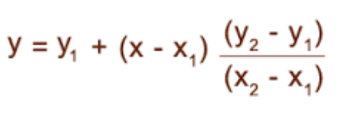I used this math to add the following function into the knn model.
def l_interp(dist,val):
i = categories.index(dist[1])
if i == 0 or i==(len(categories)-1):
speed = categories[i]
else:
above_below = 1 if val - distance[i] >= 0 else -1
x0 = distance[i + above_below]
x1 = distance[i]
y0 = categories[i + above_below]
y1 = categories[i]
x = val
speed = (y0*(x1-x)+y1*(x-x0))/(x1 -x0)
return(speed)
Since the linearization happened between the 5 clusters determined through the KNN algorithm, the fact that the motor power wasn't linear was accounted for. Combining these two methods made this model the most reliable to throw the ball into the cup.
Success Rate
This model was 90% successful. The success rate of the model was tested by having the robot throw the ball 10 times at five different positions (two throws per position). The ball made it into the cup for nearly all the distances but missed the getting it into the cup on the second throw for the second farthest distance. However, when I tested the robot again after about an hour (with a lower battery life), the robot began missing throws it could make previously.
Code
#!/usr/bin/env pybricks-micropython
from pybricks import ev3brick as brick
from pybricks.ev3devices import (Motor, TouchSensor, ColorSensor,
InfraredSensor, UltrasonicSensor, GyroSensor)
from pybricks.parameters import (Port, Stop, Direction, Button, Color,
SoundFile, ImageFile, Align)
from pybricks.tools import print, wait, StopWatch
from pybricks.robotics import DriveBase
import ubinascii, ujson, urequests, utime
import time, math
import ubinascii, ujson, urequests, utime, random
pw = []
with open('env_file.txt', 'r') as f:
for line in f:
key, value = line.strip().split('=', 1)
string1 = '{"name":"' +key+ '","value":"'+value+'"}'
pw.append(string1)
Key = ujson.loads(pw[0])
def SL_setup():
urlBase = "https://api.systemlinkcloud.com/nitag/v2/tags/"
headers = {"Accept":"application/json","x-ni-api-key":Key}
return urlBase, headers
def Put_SL(Tag, Type, Value):
urlBase, headers = SL_setup()
urlValue = urlBase + Tag + "/values/current"
propValue = {"value":{"type":Type,"value":Value}}
try:
reply = urequests.put(urlValue,headers=headers,json=propValue).text
except Exception as e:
print(e)
reply = 'failed'
return reply
def Get_SL(Tag):
urlBase, headers = SL_setup()
urlValue = urlBase + Tag + "/values/current"
try:
value = urequests.get(urlValue,headers=headers).text
data = ujson.loads(value)
#print(data)
result = data.get("value").get("value")
except Exception as e:
print(e)
result = 'failed'
return result
def takeSecond(elem):
return elem[0]
def l_interp(dist,val):
i = categories.index(dist[1])
if i == 0 or i==(len(categories)-1):
speed = categories[i]
else:
above_below = 1 if val - distance[i] >= 0 else -1
x0 = distance[i + above_below]
x1 = distance[i]
y0 = categories[i + above_below]
y1 = categories[i]
x = val
speed = (y0*(x1-x)+y1*(x-x0))/(x1 -x0)
return(speed)
def KNN(categories, distance, x, k):
dist = []
for (i, val) in enumerate(distance):
dist.append((abs(val-x),categories[i]))
dist.sort(key=takeSecond)
return(l_interp(dist[0],x))
#this is actual k means
# return 0 if sum < (k-sum) else 1 # return 0 if mostly 0s
def dsin(val):
return math.sin(math.radians(val))
def dcos(val):
return math.cos(math.radians(val))
#Define Sensors
ultra= UltrasonicSensor(Port.S1)
throw = Motor(Port.A, Direction.COUNTERCLOCKWISE)
turn = Motor(Port.D, Direction.COUNTERCLOCKWISE)
#Training Data
categories = [73,75, 80, 85,90,95, 100 ]
distance = [32,51,139,200, 247, 290, 310]
for i,val in enumerate(distance):
distance[i] = val
Constants
while True:
go = Get_SL('Throw')
spin = Get_SL('Spin')
speed = KNN(categories,distance,ultra.distance() ,3) -1
print(ultra.distance(), ' ',speed)
if go == 'true' :
Put_SL('distance', 'STRING',str(float(ultra.distance())/10) + ' cm')
Put_SL('speed', 'STRING',str(speed)[:4]+ '%')
Put_SL('Throw', 'BOOLEAN','false')
wait(500)
for i in range(1000):
if abs(throw.angle())< abs(115):
throw.dc(speed)
else:
break
wait(0.1)
print('done')
throw.run_angle(2,2,stop_type=Stop.COAST, wait=True)
if spin != 0:
print(spin)
turn.run_angle(50,int(spin),stop_type=Stop.COAST, wait=True)
Put_SL('Spin', 'INT','0')
wait(500)
Setup
Final Construction
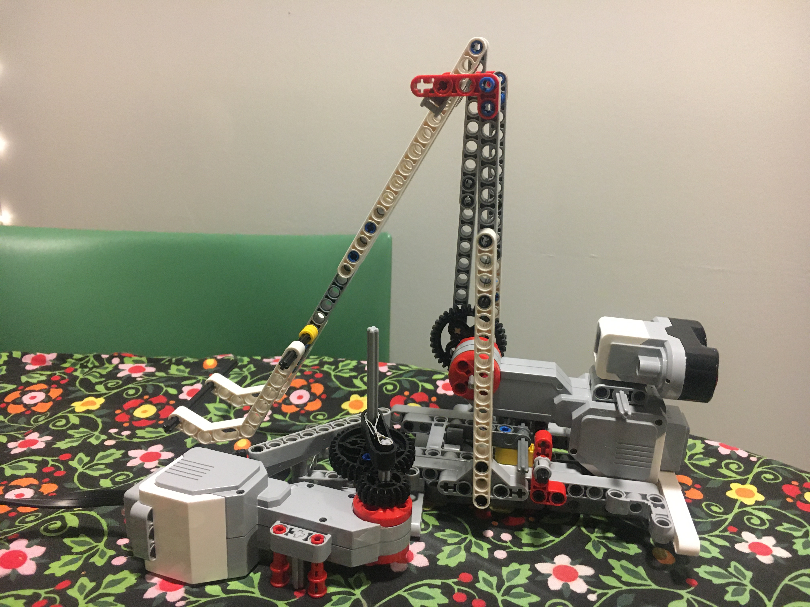Using a one motor to throw the ball and one motor to rotate the platform the robot rested on, this robot had two degrees of motion. Further, while not implemented in the final app, the angle of launch is also adjustable by controlling the angle of the motor.
I built several test-launchers that hit the ball instead of throwing it as in the final launcher, displayed below. While these launchers could all hit the ball and launch it consistently, they distance they set the ball was under 20cm for all versions. Thus, I switched to throwing the ball to increase the robot's range.
Phone App
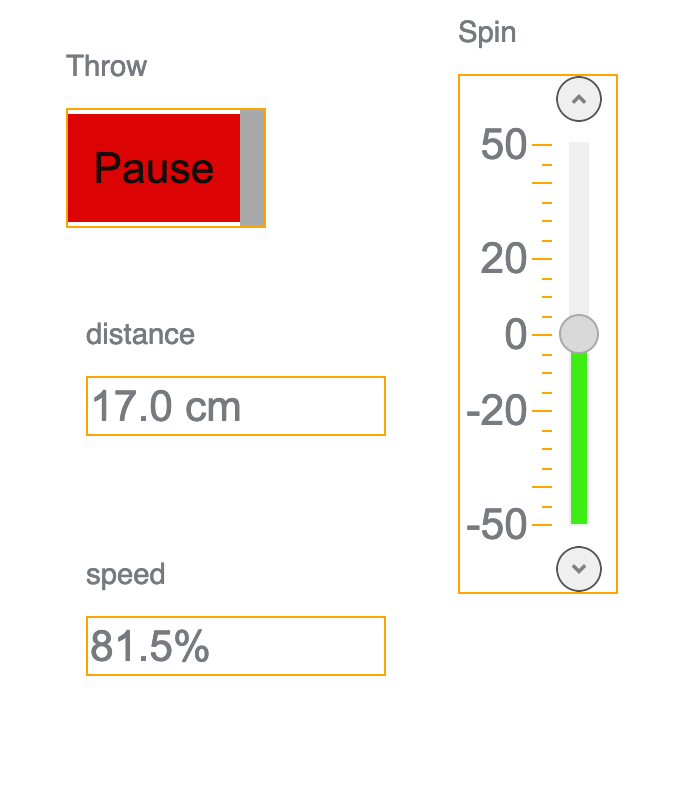The app on system link allows the user to control when the ball is launched as well as the direction the robot was aiming in. The distance and speed of the ball to be launched was reported back to the user on the app screen as shown in the image above.
Lego Sorter
robotics Project Six
Goals
- Have a rasberry pi camera talk to the ev3 via serial communication
- Use openCV to capture images using the pi camera and analyze the color planes in the image
- Build a robot using the ev3 and the pi camera that can sort red lego bricks from other lego pieces
Extras
- Handcrank lets the user change the color that is sorted (options are red, green, blue or yellow)
- The camera identifies the lego brick using an HSV mask with thresholds based on the following chart. To identify the lego bricks, the size of the mask is summed and if the sum is larger than 1000, this indicates a lego brick of the correct color is present.
-

Code
Code on EV3
#!/usr/bin/env pybricks-micropython
from pybricks.hubs import EV3Brick
from pybricks.ev3devices import (Motor, TouchSensor, ColorSensor,
InfraredSensor, UltrasonicSensor, GyroSensor)
from pybricks.parameters import Port, Stop, Direction, Button, Color
from pybricks.tools import wait, StopWatch
from pybricks.robotics import DriveBase
from pybricks.media.ev3dev import SoundFile, ImageFile
#For Serial communication:
from pybricks.parameters import Color, Port
from pybricks.iodevices import AnalogSensor, UARTDevice
# Write your program here
ev3 = EV3Brick()
ev3.speaker.beep()
#Variables for Speed:
speed = 500
open_speed = 50
#Angle Variables:
move_angle = 270
dump_angle = 100
open_angle = -20
close_angle = 25
setting_angle = 0
direction = -1
#Motor and Sensors:
platform = Motor(Port.D)
funnel = Motor(Port.C)
dump_m = Motor(Port.B)
setting_m = Motor(Port.A)
# setup uart port
uart = UARTDevice(Port.S2, 9600, timeout=2000)
#To connect to Serial using UART
def get_pi_value():
try:
if (uart.waiting()) !=0:
msg = uart.read(uart.waiting()).decode('utf-8')
print(msg[-1])
return msg[-1]
except Exception as e:
print(e)
#continue
def color_setter():
color = setting_m.angle()
print(color)
uart.write(str(color).encode())
#To Open and place the lego on the platform
def open_door():
funnel.run_angle(open_speed,open_angle,stop_type = Stop.COAST, wait=True)
wait(500)
funnel.run_angle(speed,close_angle,stop_type = Stop.COAST, wait=True)
#To sort into the the two boxes
def judgement(pi_value):
spin = 0
if pi_value == '1': #1 correlates to red
spin = 1
ev3.speaker.play_file('angel.wav')
elif pi_value == '0': #2 correlates to other colors
spin = -1
for i in range(2):
dump_m.run_angle(speed,dump_angle*spin,stop_type = Stop.COAST, wait=True)
spin = spin*-1
wait(500)
#Main Code:
def main():
direction = -1
while True:
color_setter()
if direction == -1:
open_door()
platform.run_angle(speed, direction*move_angle, stop_type=Stop.COAST, wait=True)
direction = direction*-1
if direction == 1:
wait(2000)
pi_value = get_pi_value()
print(pi_value)
judgement(pi_value)
main()Code on Rasberry Pi
import numpy as np
import cv2
import PIL.Image
from io import BytesIO
import IPython.display
import imutils
import serial
s = serial.Serial("/dev/serial0",9600,timeout=2000)
s.write("begin".encode()) #to write to EV3
cap = cv2.VideoCapture(0)
d1 = IPython.display.display("Your image will be displayed here", display_id=3)
d2 = IPython.display.display("Your image will be displayed here", display_id=4)
def array_to_image(a, fmt='png'):
f = BytesIO()
PIL.Image.fromarray(a).save(f, fmt)
return IPython.display.Image(data=f.getvalue())
def colorchoice(angle):
#reds
lower_red = np.array([150,50,50])
upper_red = np.array([180,255,255])
lower_red2 = np.array([170,50,50])
upper_red2 = np.array([180,255,255])
#green
lower_g= np.array([40,80,20])
upper_g= np.array([70,255,255])
#range of blues
lower_blue = np.array([95,80,50])
upper_blue = np.array([125,255,255])
#yellow
lower_y= np.array([26,80,20])
upper_y= np.array([35,255,255])
#masks
maskred = cv2.inRange(hsv, upper_red, lower_red)+ cv2.inRange(hsv, lower_red2, upper_red2)
maskgreen = cv2.inRange(hsv, lower_g, upper_g)
maskyellow = cv2.inRange(hsv, lower_y, upper_y)
maskblue = cv2.inRange(hsv, lower_blue, upper_blue)
mask = maskred
if (abs(angle)>= 0 and abs(angle)<90):
mask = maskred
elif (abs(angle) >= 90 and abs(angle)<180):
mask = maskblue
elif (abs(angle) >=180 and abs(angle)<270):
mask = maskyellow
elif (abs(angle >=270 and abs(angle)<360)):
mask = maskgreen
return(mask)
toSend = 0
complete = False
angle = 0
while True:
if (s.inWaiting()) != 0:
#print('SINWAITING: ', str(s.inWaiting()))
msg = s.read(s.inWaiting()).decode('utf-8')
#print(int(msg)%360)
angle = int(msg)%360
# Capture frame-by-frame and convert to hsv
ret, frame = cap.read()
frame = imutils.resize(frame, width=200, inter=cv2.INTER_LINEAR)
hsv = cv2.cvtColor(frame, cv2.COLOR_BGR2HSV)
mask = colorchoice(angle)
d1.update(array_to_image(mask))
#d2.update(array_to_image(hsv))
if np.sum(mask) > 100:
toSend = 1
else:
toSend = 0
complete = True
if complete==True:
s.write(str(toSend).encode()) #to write to EV3
complete = False
# When everything done, release the capture
cap.release()Magic Conductor
Robotics Project Five
Goals
- Using the accelerometer and gyroscope on the Arduino nano and the speaker form the EV3, create a musical masterpiece
Code
#!/usr/bin/env pybricks-micropython
from pybricks.hubs import EV3Brick
from pybricks.ev3devices import (Motor, TouchSensor, ColorSensor,
InfraredSensor, UltrasonicSensor, GyroSensor)
from pybricks.parameters import Port, Stop, Direction, Button, Color
from pybricks.tools import wait
from pybricks.robotics import DriveBase
from pybricks.media.ev3dev import SoundFile, ImageFile
from serial import Serial
import ujson
import math
# Write your program here
FLICK_THRESHOLD = 200
FILES = ['pewpew.wav', 'AcousticSnare-04.wav', 'multicrash.wav', 'vinylkick.wav']
# FILES = [SoundFile.HELLO] * 4
ev3 = EV3Brick()
ready_sensor = TouchSensor(Port.S1)
wait(100)
def lyric_generator():
lyrics = 'We will we will rock you'
lyrics = lyrics.split(' ')
while True:
for lyric in lyrics:
yield lyric
def sign(val):
return 1 if val >= 0 else -1
def constrain(val, min_val, max_val):
return min(max_val, max(min_val, val))
def map(val, mode):
if mode == 'pitch':
val = ((val + 180)/360) * 5000 + 600
elif mode == 'roll':
val = ((val + 180)/360) * 3000 + 400
elif mode=='flick':
val = (val/1000) * 90
return val
def drum(roll):
roll += 270
degree_increment = 360 / len(FILES)
file_index = int(roll / degree_increment)
try:
return FILES[file_index]
except:
return FILES[0]
def srss(x, y, z):
return math.pow(math.pow(x, 2) + math.pow(y, 2) + math.pow(z, 2), .5)
def main():
roller = Serial("/dev/ttyACM0", 9600)
flicker = Serial("/dev/ttyACM2", 9600)
lyric_gen = lyric_generator()
wait(1000)
ev3.speaker.beep()
while True:
roller_data = []
while not 'zGyro' in roller_data:
roller_data = roller.read(roller.inWaiting()).decode('utf-8')
try:
rolled_data = ujson.loads(roller_data)
except Exception as e:
continue
# print(rolled_data)
if abs(rolled_data['xAcc']) > .8:
spoken_words = [next(lyric_gen) for _ in range(4)]
ev3.speaker.say(' '.join(spoken_words))
continue
roll_dir = sign(rolled_data['zAcc'])
roll = roll_dir * math.acos(constrain(rolled_data['yAcc'], -1, 1)) * 180/math.pi - 90
curr_drum = drum(roll)
print(curr_drum)
while not ready_sensor.pressed():
flicker_data = []
while not 'zGyro' in flicker_data:
flicker_data = flicker.read(flicker.inWaiting()).decode('utf-8')
try:
flicked_data = ujson.loads(flicker_data)
except Exception as e:
continue
flick_mag = srss(flicked_data['xGyro'], flicked_data['yGyro'], flicked_data['zGyro'])
if flick_mag >= FLICK_THRESHOLD:
ev3.speaker.play_file(curr_drum)
main()Images for the Blind
Robotics Project Four
Goals
- Create a system that moves the EV3 color sensor across a number printed on a piece of paper
- Build a joystick with haptic feedback that react in a way that distinguishes when the sensor is over light versus dark
- Have two EV3s communicate over serial
Bonus Features
The x-y plotter we built using the EV3 motors and a rack and pinion system was slow to use when manually driving the system with a joystick and often inaccurate as the user would lose track of where they were on the plotter. Thus, we also built in a feature that drove the motors so that it automatically scanned the entire area of the plotter and then graphed the output to a screen.
While not perfect, letter identification via the generated picture was much more reliable than via the haptic feedback. Below is an image generated from the letter I written on a piece of white paper.
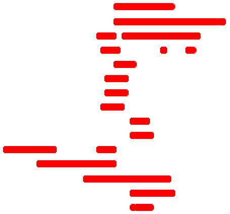Code - Manually Driven
Master
from pybricks import ev3brick as brick
from pybricks.ev3devices import (Motor, TouchSensor, ColorSensor,
InfraredSensor, UltrasonicSensor, GyroSensor)
from pybricks.parameters import (Port, Stop, Direction, Button, Color,
SoundFile, ImageFile, Align)
from pybricks.tools import print, wait, StopWatch
from pybricks.robotics import DriveBase
from pybricks.iodevices import UARTDevice
brick.sound.beep()
ymotor = Motor(Port.B, Direction.CLOCKWISE)
xmotor = Motor(Port.A, Direction.COUNTERCLOCKWISE)
hapticmotor = Motor(Port.C, Direction.COUNTERCLOCKWISE)
direction = 1
print('????')
uart = UARTDevice(Port.S1, 9600, timeout=10000)
wait(500)
uart.write('a')
while uart.waiting() == 0:
wait(10)
curr = ""
previous = 'q'
uart.write('q')
while True:
xangle = xmotor.angle()
yangle = ymotor.angle()
holder = uart.read(1)
#print(str(xangle) + " " + str(yangle))
if yangle > 20 and xangle > 20:
curr = 'x'
elif yangle > 20 and (xangle < 20 and xangle > -20):
curr = 'y'
elif yangle > 20 and (xangle < -20):
curr = 'z'
elif (yangle < 20 and yangle > -20) and xangle < -20:
curr = 's'
elif (yangle < -20) and xangle < -20:
curr = 't'
elif (yangle < -20) and (xangle < 20 and xangle > -20):
curr = 'u'
elif (yangle < -20) and (xangle > 20):
curr = 'v'
elif (yangle > -20 and yangle < 20) and xangle > 15:
curr = 'w'
else:
curr = 'q'
if previous != curr:
uart.write(curr)
previous = curr
if uart.waiting() != 0:
if holder == b'b' :
print('b')
hapticmotor.run(40)
else:
print('empty')
hapticmotor.run(0)
wait(.1)
Slave
Code - Automatically Driven
Master
from pybricks import ev3brick as brick
from pybricks.ev3devices import (Motor, TouchSensor, ColorSensor,
InfraredSensor, UltrasonicSensor, GyroSensor)
from pybricks.parameters import (Port, Stop, Direction, Button, Color,
SoundFile, ImageFile, Align)
from pybricks.tools import print, wait, StopWatch
from pybricks.robotics import DriveBase
from pybricks.iodevices import UARTDevice
brick.sound.beep()
ymotor = Motor(Port.B, Direction.CLOCKWISE)
xmotor = Motor(Port.A, Direction.COUNTERCLOCKWISE)
hapticmotor = Motor(Port.C, Direction.COUNTERCLOCKWISE)
direction = 1
uart = UARTDevice(Port.S1, 9600, timeout=10000)
wait(500)
uart.write('a')
while uart.waiting() == 0:
wait(10)
uart.write('q')
while True:
xangle = xmotor.angle()
yangle = ymotor.angle()
holder = uart.read(1)
if uart.waiting() != 0:
if holder == b'b' :
print('b')
hapticmotor.run(40)
else:
print('empty')
hapticmotor.run(0)
wait(.1)
Slave
#!/usr/bin/env pybricks-micropython
#brickrun -r -- pybricks-micropython
from pybricks import ev3brick as brick
from pybricks.ev3devices import (Motor, TouchSensor, ColorSensor,
InfraredSensor, UltrasonicSensor, GyroSensor)
from pybricks.parameters import (Port, Stop, Direction, Button, Color,
SoundFile, ImageFile, Align)
from pybricks.tools import print, wait, StopWatch
from pybricks.robotics import DriveBase
from pybricks.iodevices import AnalogSensor, UARTDevice
def colorcheck(side,up,direction):
if color.color() != Color.WHITE:
if direction == -1:
side = 80 -side
fobj.write(str(side)+','+str(up)+'\n')
else:
uart.write('a')
brick.sound.beep()
minimotor = Motor(Port.C)
leftmotor = Motor(Port.A, Direction.CLOCKWISE)
watch = StopWatch()
watchside = StopWatch()
rightmotor= Motor(Port.D, Direction.CLOCKWISE)
robot = DriveBase(leftmotor,rightmotor, 40, 200)
color = ColorSensor(Port.S1)
uart = UARTDevice(Port.S4, 9600, timeout=1000)
direction = 1
#initial waiting phase:
holder = b'a'
motorspeed = 0
minispeed = 0
filename = 'letters.csv'
fobj = open(filename, 'w')
for up in range(20):
print(up)
watch.reset()
watch.resume()
while watch.time() < 200:
robot.drive(20, 0)
robot.drive(0,0)
for side in range(80):
watchside.reset()
watchside.resume()
while watchside.time()<150:
minimotor.run(direction*-50)
colorcheck(side,up,direction)
direction *= -1
while True:
colorcheck()
direction = 1
if uart.waiting() != 0:
holder = uart.read(1).decode("utf-8")
print(holder)
if holder == 'q': #forward
motorspeed = 0
minispeed = 0
wait(0.1)
fobj.close()
Letter Analysis
#!/usr/bin/env python3
import pandas as pd
import matplotlib.pyplot as plt
import numpy as np
filename ='./letters.csv'
fin = open(filename,'r')
data = []
for line in fin:
line = line.split(',')
print(line)
data.append(line)
df= pd.DataFrame(data)
time = np.arange(80)
y1 = pd.to_numeric(df[0])
y3 =pd.to_numeric(df[1])
plt.scatter(y1,y3,c='r')
plt.xlim((0,80))
Follow the Line
Robotics Project Three
Goals
- Use two LEDS and a light sensor to follow a black line
- Use a P-D Controller to minimize oscillation
- Lasercut a cover to protect the light sensors from external light sources
Code
#!/usr/bin/env pybricks-micropython
from pybricks import ev3brick as brick
from pybricks.ev3devices import (Motor, TouchSensor, ColorSensor,
InfraredSensor, UltrasonicSensor, GyroSensor)
from pybricks.parameters import (Port, Stop, Direction, Button, Color,
SoundFile, ImageFile, Align)
from pybricks.tools import print, wait, StopWatch
from pybricks.robotics import DriveBase
from pybricks.ev3devio import Ev3devSensor
import utime
import ev3dev2
from ev3dev2.port import LegoPort
from math import *
import csv
# Write your program here
left_motor = Motor(Port.D, Direction.CLOCKWISE, [40,24])
right_motor = Motor(Port.A, Direction.CLOCKWISE, [40,24])
robot = DriveBase(left_motor,right_motor,56,202)
filename = 'error.csv'
fobj = open(filename, 'w')
class MySensor(Ev3devSensor): #Define Class
_ev3dev_driver_name="ev3-analog-01"
def readvalue(self):
self._mode('ANALOG')
return self._value(0)
class controller(object):
'''PID Controller Class for line follow robot'''
def __init__(self, setpoint_l, setpoint_r):
self.setpoint_r = setpoint_r
self.setpoint_l = setpoint_l
self.right = 0
self.left = 0
self.lerror = 0
self.rerror = 0
self.int_l = 0
self.int_r = 0
self.der_l = 0
self.der_r = 0
self.der_l_p = 0
self.der_r_p = 0
self.speed = 200
self.k_p = .75
self.k_i = 0
self.k_d = .3
def prop_control(self):
#self.left = self.left -25
self.lerror = self.setpoint_l - self.left
self.rerror = self.setpoint_r - self.right
fobj.write('Left,'+str((self.lerror))+ ',Right,'+ str((self.rerror))+'\n')
def int_control(self):
self.int_l += self.lerror
self.int_r += self.rerror
fobj.write(',,,,Left Integ,'+str((self.int_l))+ ',Right Integ,'+ str((self.int_r))+'\n')
def der_control(self):
self.der_l_p = self.der_l
self.der_r_p = self.der_r
self.der_l = self.lerror - self.der_l_p
self.der_r = self.rerror - self.der_r_p
fobj.write(',,,,,,,,Left Deriv,'+str(self.der_l)+ ',RightDeriv,'+str(self.der_r)+'\n')
def setspeed(self):
if (self.der_l or self.der_r) < -70:
scaled = (self.der_l + self.der_r)/4
scaled = int(round(scaled))
self.speed += scaled
else:
pass
#print(self.speed)
return self.speed
def setangle(self):
self.prop_control()
self.der_control()
if abs(self.lerror) > abs(self.rerror):
anglechange = self.k_p * (self.lerror)*1
anglechange -= self.k_d*(self.der_l)
else:
anglechange = self.k_p * (self.rerror)*-1
anglechange -= self.k_d*(self.der_l)*1
return anglechange
def main():
sens = LegoPort(address ='ev3-ports:in3') # which port? 1,2,3, or 4
sens.mode = 'ev3-analog'
utime.sleep(0.5)
sensor_left=MySensor(Port.S1) # same port as above
sensor_right=MySensor(Port.S3) # same port as above
robot.drive(0,0)
while True:
lightLevel = sensor_left.readvalue()
lightLevel2 = sensor_right.readvalue()
print('Left',lightLevel)
print( 'Right', lightLevel2)
controller.right = lightLevel2
controller.left = lightLevel
robot.drive(80,controller.setangle())
controller = controller(327, 327)
main()
fobj.close()Grab and Go
Robotics Project Two
Goals
- Will race against other robots to get the "Grail"
- Grab the "Grail" and get it over the finish line
- Completely control car via phone using System Link
- Show a useless fact on System Link Dashboard using a REST api
Code
#!/usr/bin/env pybricks-micropython
from pybricks import ev3brick as brick
from pybricks.ev3devices import (Motor, TouchSensor, ColorSensor,
InfraredSensor, UltrasonicSensor, GyroSensor)
from pybricks.parameters import (Port, Stop, Direction, Button, Color,
SoundFile, ImageFile, Align)
from pybricks.tools import print, wait, StopWatch
from pybricks.robotics import DriveBase
import ubinascii, ujson, urequests, utime
import time
# Write your program here
brick.sound.beep()
Key = env.SKEY
def SL_setup():
urlBase = "https://api.systemlinkcloud.com/nitag/v2/tags/"
headers = {"Accept":"application/json","x-ni-api-key":Key}
return urlBase, headers
def Put_SL(Tag, Type, Value):
urlBase, headers = SL_setup()
urlValue = urlBase + Tag + "/values/current"
propValue = {"value":{"type":Type,"value":Value}}
try:
reply = urequests.put(urlValue,headers=headers,json=propValue).text
except Exception as e:
print(e)
reply = 'failed'
return reply
def Get_SL(Tag):
urlBase, headers = SL_setup()
urlValue = urlBase + Tag + "/values/current"
try:
value = urequests.get(urlValue,headers=headers).text
data = ujson.loads(value)
#print(data)
result = data.get("value").get("value")
except Exception as e:
print(e)
result = 'failed'
return result
def Get_RandomUseless():
urlValue = 'https://uselessfacts.jsph.pl/random.json?language=en'
try:
value = urequests.get(urlValue).text
data = ujson.loads(value)
result = data.get("text")
except Exception as e:
print(e)
result = 'FAILURE'
return result
def Create_SL(Tag, Type):
urlBase, headers = SL_setup()
urlTag = urlBase + Tag
propName={"type":Type,"path":Tag}
try:
urequests.put(urlTag,headers=headers,json=propName).text
except Exception as e:
print(e)
left_motor = Motor(Port.A)
right_motor = Motor(Port.D)
box_motor = Motor(Port.C)
wheel_diameter =56
axle_track = 140
robot = DriveBase(left_motor, right_motor, wheel_diameter, axle_track)
prevboxpos = 'false'
Put_SL('Stop','BOOLEAN','false')
Put_SL('Straight','BOOLEAN','false')
while True:
speed = int(Get_SL('moveforward'))
angle = int(Get_SL('TurnAngle'))
stop = Get_SL('Stop')
boxpos = Get_SL('BoxPosition')
newfact =Get_SL('NewFact')
if (stop == 'true'):
Put_SL('moveforward','INT','0')
Put_SL('TurnAngle','INT','0')
Put_SL('Stop','BOOLEAN','false')
if (newfact =='true'):
uselessfacts = Get_RandomUseless()
Put_SL('UselessFact','STRING',uselessfacts)
Put_SL('NewFact','BOOLEAN','false')
if (boxpos == 'true' and prevboxpos=='false'):
print("Going Down")
box_motor.run_angle(50,-290,Stop.COAST, True)
elif (boxpos == 'false' and prevboxpos=='true'):
print("Going Up")
box_motor.run_angle(50,300,Stop.COAST, True)
print(angle)
robot.drive(speed,angle)
prevboxpos = boxpos
Put_SL('TurnAngle','INT','0')
print(angle)Sumo Wrestling
Robotics Project One
Code
#!/usr/bin/env pybricks-micropython
from pybricks import ev3brick as brick
from pybricks.ev3devices import (Motor, TouchSensor, ColorSensor,
InfraredSensor, UltrasonicSensor, GyroSensor)
from pybricks.parameters import (Port, Stop, Direction, Button, Color,
SoundFile, ImageFile, Align)
from pybricks.tools import print, wait, StopWatch
from pybricks.robotics import DriveBase
right_motor = Motor(Port.D, Direction.COUNTERCLOCKWISE)
left_motor = Motor(Port.A, Direction.COUNTERCLOCKWISE)
robot = DriveBase(left_motor,right_motor,56,160)
light = ColorSensor(Port.S3)
ultra = UltrasonicSensor(Port.S2)
def checkReflection():
reflect = light.ambient()
if reflect>13:
#on the table
return(True)
else:
return(False)
# Establishing counter values
l_counter = 0
r_counter = 0
while True:
onTable = checkReflection()
print(ultra.distance())
if currangle < 180:
small.run(75)
else:
small.run(-75)
if onTable == True:
if (ultra.distance() <300):
robot.drive(200,0)
else:
robot.drive(100,0)
elif onTable == False:
robot.drive_time(-100,70,2000)